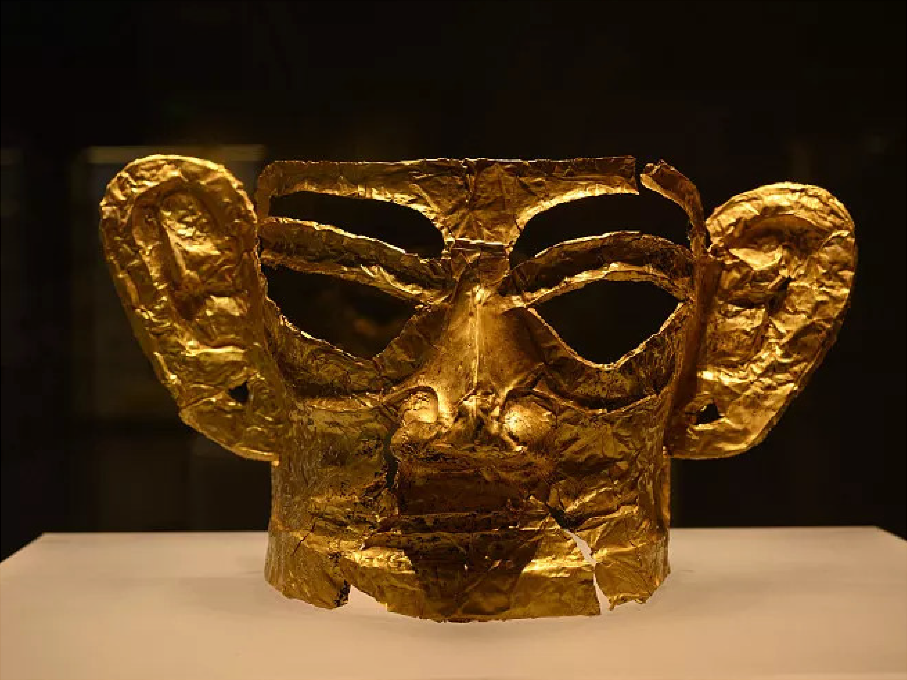
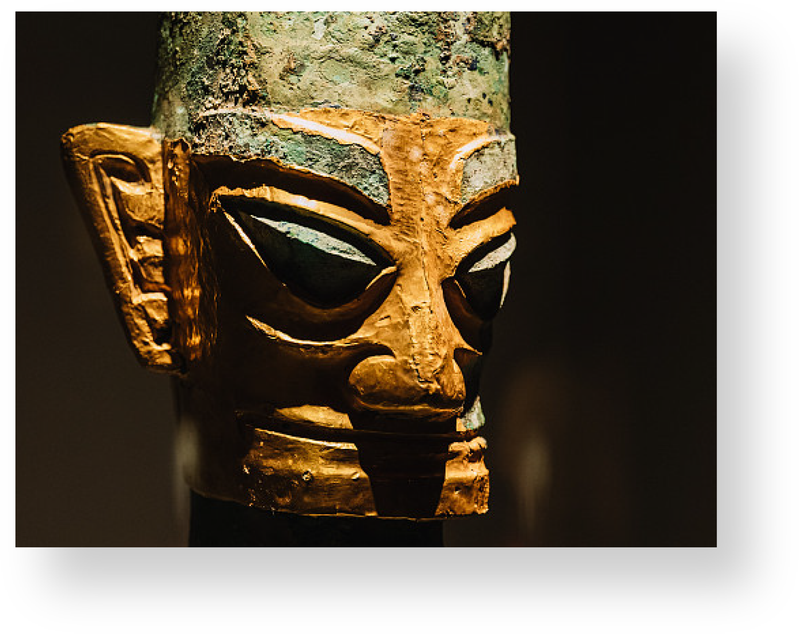
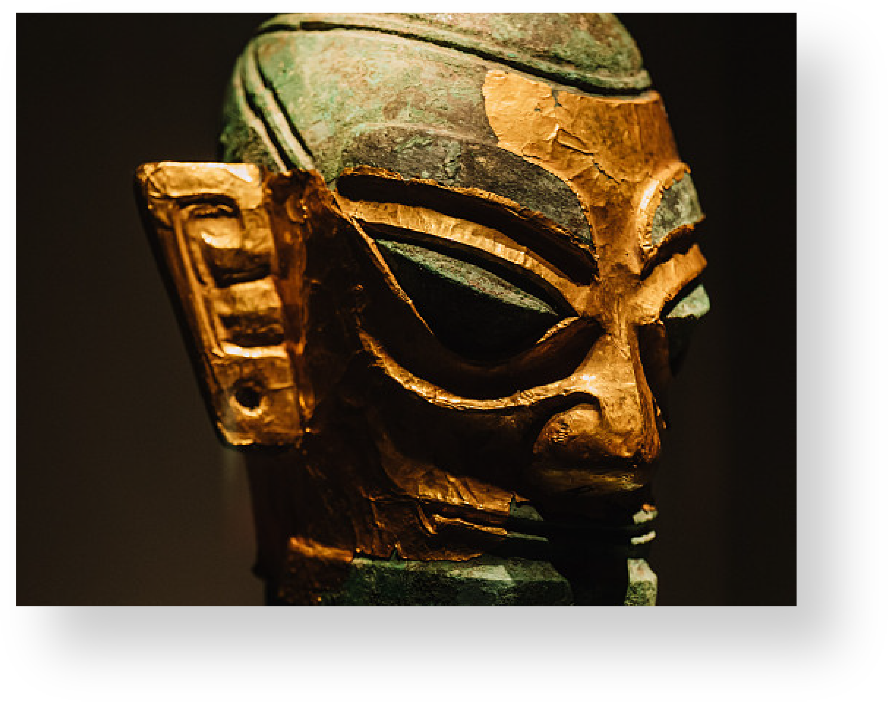

<!DOCTYPE html>
<html>
<head>
    <meta charset="utf-8">
    <link rel="stylesheet" href="./css/style.css">
    <title>三星堆</title>
</head>
<body>
    <div class="father3 auto">
        <div class="top auto flex">
            <div>
                
                三星堆
            </div>
            <ul class="flex">
                <li><a href="index.html">首页</a></li>
                <li><a style="text-decoration: underline;" href="list2.html">历史</a></li>
                <li><a href="list3.html">工艺</a></li>
                <li><a href="list4.html">文化</a></li>
                <li><a href="list5.html">更多</a></li>
            </ul>
        </div>
        <div class="main2 auto flex">
            <div>
                <p>黄金面具</p>
                <p>Golden Mask</p>
                <p>黄金面具所发现的半张面具的宽度约23厘米，高度约
28厘米，比完整的金沙大金面具还要大。同时，这件
黄金面具厚度非常厚，不需要任何支撑，就可以独自
立起来。半张黄金面具重量大约为280g，预计完整的
总重量应该是超过500g，这比中国所出土的商代最重
的金器三星堆金杖（重463克）的重量还要重，如果
能够完整发现，这件黄金面具将超过金杖成为中国所
发现的同时期最重的金器.....</p>
                <!-- 修改了这一行的href属性 -->
                <p><a href="https://baike.baidu.com/item/%E9%BB%84%E9%87%91%E9%9D%A2%E5%85%B7/56383626" target="_blank">了解更多</a></p>
                <p>The half mask found in the Golden Mask is about 23 centimeters wide and about 28 centimeters high, which is larger than the complete Sands Gold Mask. At the same time, this gold mask is so thick that it does not require any support to stand up on its own. Half of the gold mask weighs about 280g.....</p>
            </div>
            
        </div>
    </div>
    <div class="father2 auto">
        <div class="top2 auto">
            戴金面罩<br>
            青铜人头像
        </div>
        <div class="main3 auto flex">
            <div>
                <p>平顶人头像</p>
                <p>面部较瘦削，粗眉，立眼，直鼻，阔口，方颐，下颌
宽，颈直，金面罩用金皮捶拓而成，上齐额，下包颐
，两侧过耳，双眉、双眼及耳垂穿孔，镂空。</p>
                <p></p>
            </div>
            <div>
                <p>圆顶人头像</p>
                <p>面似面部本身已铸出蒙至头顶、仅留顶心的连体铜面
罩。头发似从后向前梳，发梢敛于面罩内。脑后有一
发簪，上下端均残缺。</p>
                <p></p>
            </div>
        </div>
    </div>
</body>
</html>